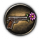

Ideas
This article is considered accurate for the current version of the game.
Government[edit]
Economy laws[edit]
Exactly one economy law may be selected at a time. These cost 150 PP. CONSUMER GOODS seems to be calculated by multiplying the goods percentage in the economy law by the civilian and military factories total. Naval dockyards do not appear to change the value.
| Law | Consumer Goods Factories |
Civilian Factory Construction |
Military Factory Construction |
Manpower | Tension limit | Prerequisites | ||||
|---|---|---|---|---|---|---|---|---|---|---|
| Join Faction | Send Volunteers | Lend-Lease | Guarantee | Declare war | ||||||
| Undisturbed Isolation | 40% | +45% | -45% | +0% | 20% | 20% | 50% | 75% | 100% | None |
| Isolation | ||||||||||
| Civilian Economy | 30% | +10% | -10% | +0% | ||||||
| Early Mobilization | 25% | |||||||||
| Partial Mobilization | 20% | -10% | +10% | -5% | ||||||
| War Economy | 15% | -30% | +30% | -10% | ||||||
| Total Mobilization | 10% | -45% | +45% | -15% | ||||||
Trade laws[edit]
Exactly one trade law may be selected at a time.
Conscription laws[edit]
Exactly one conscription law may be selected at a time.
n.b. The IC ratio requirements for conscription laws as seen in the livestreams seem to be backwards with the more aggressive laws having less restrictive conditions. It remains to be seen whether this is intentional, the numbers are off, or the wording is off.
| Law | Recruitable population |
Construction speed |
Factory Output |
Training time |
Experienced soldier losses |
Prerequisites |
|---|---|---|---|---|---|---|
| Disarmed Nation | 1% | ? | ? | ? | ? | None |
| Volunteer Only | 2% | -0% | -0% | -0% | -0% | None |
| Limited Conscription | 5% | -0% | -0% | -0% | -0% | None |
| Extensive Conscription | 10% | -0% | -0% | -0% | -0% | At least one of the following:
|
| Service by Requirement | 20% | -10% | -10% | -0% | -0% | All of these following:
|
| All Adults Serve | 40% | -30% | -30% | +10% | -0% | All of these following:
|
| Scraping the Barrel | 50% | -40% | -40% | +20% | +10% | All of these following:
|
Political advisers[edit]
Up to three political advisers may be selected.
| Idea | Effect |
|---|---|
| Armaments Organizer | -1 civilian industry conversion |
| Backroom Backstabber | Weekly national unity: -0.1% Political Power Gain: +20% |
| Captain of Industry | +20% civilian factory construction speed +20% infrastructure construction speed +20% refinery construction speed |
| Communist Revolutionary | Daily Communism Support: +0.10 |
| Democratic Reformer | Daily Democracy Support: +0.10 |
| Fascist Demagogue | +2% weekly fascism support |
| Fortification Engineer | +20% bunker construction +20% coastal bunker +20% AA construction |
| Prince of Terror | -5% national unity -20% effect of partisans |
| Quartermaster General | Air base Construction Speed +15% Naval base Construction Speed +15% Rocket Site Construction Speed +15% Radar Station Construction Speed +15% Nuclear Reactor Construction Speed +15% |
| Silent Workhorse | Political Power Gain: +10% |
| Smooth-Talking Charmer | +10% trade deal opinion factor |
| War Industrialist | +20% military factory construction speed +20% dockyard construction speed |
Research and production[edit]
Tank Designer[edit]
| Designer | Effect |
|---|---|
| Heavy Tank Designer | Armor Research Speed: +10% Reliability: +5% Soft Attack: +5% |
| Mobile Tank Designer | Armor Research Speed: +10% Reliability: +5% Hard Attack: +5% |
Ship Designer[edit]
| Designer | Effect |
|---|---|
| Atlantic Fleet Designer | Naval Research Speed: +10.0% Carrier: Capital Ship: |
| Coastal Defence Fleet Designer | ? |
| Escort Fleet Designer | ? |
| Pacific Fleet Designer | ? |
| Raiding fleet designer | Naval Research Speed: +10.0% Carrier: Capital ship: Submarine: |
Aircraft Designer[edit]
| Designer | Effect |
|---|---|
| CAS Designer | Air Reseach Speed: +10%
Close Air Support:
|
| Heavy Aircraft Designer | Air Reseach Speed: +10%
Strategic Bomber:
|
| Light Aircraft Designer | Air Reseach Speed: +10%
Fighter:
|
| Medium Aircraft Designer | Air Reseach Speed: +10%
Heavy Fighter:
Tactical Bomber
|
| Naval Aircraft Designer | ? |
Materiel Designer[edit]
| Designer | Effect |
|---|---|
| Artillery Designer | ? |
| Infanterie Equipment Designer | Small Arms Research Speed: +10% |
| Motorized Equipment Designer | Motorized Research Speed: +10% |
Industrial Concern[edit]
| Idea | Effect |
|---|---|
| Electronics Concern | ?Electronic Research Speed: +10%? |
| Industrial Concern | Industrial Research Speed: +10% |
| Refining Concern | ? |
Theorist[edit]
| Theorist | Effect | Political Power Cost |
|---|---|---|
| Air Warfare Theorist | Air Experience Gain: +0.05 daily Air Doctrine Research Speed: +10% |
150 |
| Blitzkrieg Theorist | Army Experience Gain: +0.05 daily Land Doctrine Research Speed: +10% |
|
| Grand Battleplan Expert | Army Experience Gain: +0.05 daily Grand Battleplan Doctrine: +15% |
250 |
| Grand Fleet Proponent | Naval Experience Gain: +0.05 daily Fleet In Being Doctrine: +15% |
250 |
| Military Theorist | Army Experience Gain: +0.05 daily Land Doctrine Research Speed: +10% |
150 |
| Navy Theorist | Naval Experience Gain: +0.05 daily Naval Doctrine Research Speed: +10% |
150 |
| Nuclear Scientist | 150 | |
| Rocket Scientist | 150 | |
| Victory Through Airpower | Air Experience Gain: +0.05 daily Strategic Destruction Doctrine: +15% |
250 |
Military staff[edit]
Chief of Army[edit]
| Chief of Army | Effect |
|---|---|
| Drill Expert | Army training time: -10.0% |
[edit]
| Chief of Navy | Effect |
|---|---|
| Decisive Battle Expert | Capital ship attack: +10.0% Capital ship defense: +10.0% |
| Commerce Raiding Genius | Convoy raiding efficiency: +20.0% |
Chief of Air Force[edit]
| Chief of Air Force | Effect |
|---|---|
| Group Support Expert | Air Support : +10.0% |
| All Weather Expert | Bad Weather Penalty : -20.0% |
| Reform Expert | ? |
Military High Command[edit]
Up to three military high command may be selected.
| Military High Command | Effect | Political Power Cost |
|---|---|---|
| Infantry Expert | Infantry Division Attack: +10% Infantry Division Defense: +15% |
150 |
| Bomber Interception Expert | Interception attack: +3% Interception defense: +3% Interception agility: +3% |
150 |
| Logistic Expert | Army attrition: -8.0% | 150 |
| Naval Air Defense Expert | Naval AA Attack: +15% | 150 |
| Fleet Logistics Expert | Naval max range: +10% | 150 |
| Anti-Submarine Specialist | Submarine detection: +10% | 150 |
| Airborne Expert | Paradrop attack: +2% Paradrop defense: +5% Paradrop agility: +5% |
150 |
| Close Air Support Expert | Close Air Support attack: +3% Close Air Support defense: +3% Close Air Support agility: +3% |
150 |
| Regrouping Expert | Army Recovery Rate: +8% | 150 |
| Armored Genius | Armor Division Attack: +15% Armor Division Defense: +15% |
150 |

{kind=link}
{kind=link}
{kind=link}
{kind=link}
{kind=link}
{kind=link}
{kind=link}
{kind=link}
{kind=link}
{kind=link}
{kind=link}
{kind=link}
{kind=link}
{kind=link}
{kind=link}
{kind=link}
{kind=link}
{kind=link}